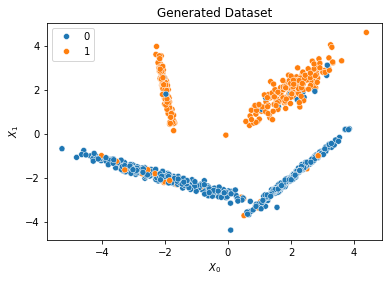
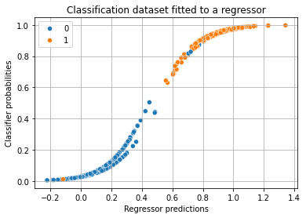
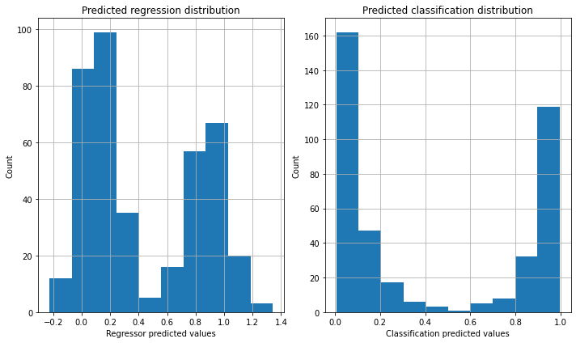

Regressor as Classifier
... it works better than you think.
A classifier predicts a categorical target variable while a regressor predicts a continuous response variable. Can we fit a regressor as a classifier? Let’s find out.
Experiment
Create the dataset
Create a dataset with the sklearn make_classification() method.
We create a dataset which is not too challenging so as not to
introduce any extraneous factors into our experiment.
|
|

Fit the classifier
Fit the classifier using sklearn function LogisticRegression().
Split the data into training and testing sets and fit the classifier
on the training set. Make the predictions using the test set.
|
|
Fit the regressor
Fit the regressor using sklearn function LinearRegression().
Use the train set for fitting the regressor and then move on to
predicting the model using the test set.
|
|
Get the prediction probabilities and plot them
After we obtain the prediction probabilities for the classifier and the scores (predicted response variable) for the regressor, plot them against each other.
|
|

We will also plot the distribution of scores in both the cases (classifier and regressor).
|
|

Interpreting the results
Examining the s-curve, one can clearly see that the true positive predictions for both the classifier and the regressor (keeping 0.5 as the threshold) are the same.
For linearly separable data, keeping a score (or probability) threshold of 0.5, the regressor would consistently do as well as the classifier in predicting labels.
The s-shape, and the histogram on the right suggest that the classifier is more confident than the regressor because it has clumped its prediction probabilities closer to 1 or 0. Reducing the class-separation tends to flatten the s-curve to a near straight line (can be verified experimentally).
Conclusion
We need to cautiously interpret our results. The regressor is an underconfident classifier in predicting labels. By keeping the probability threshold to 0.5, the regressor behaves almost the same way as the classifier at least for linearly separable data.